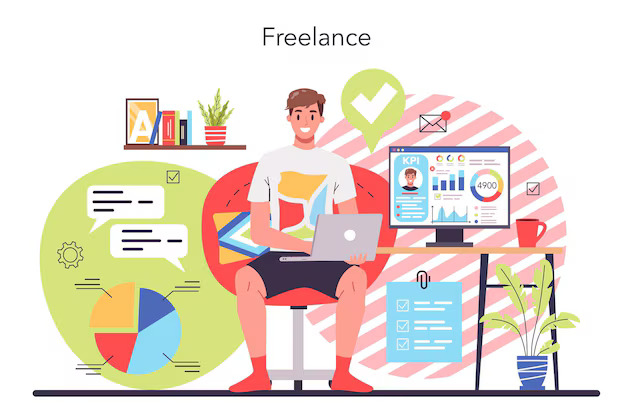
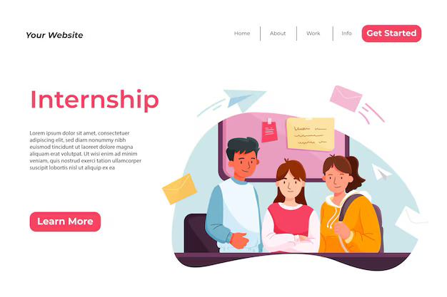
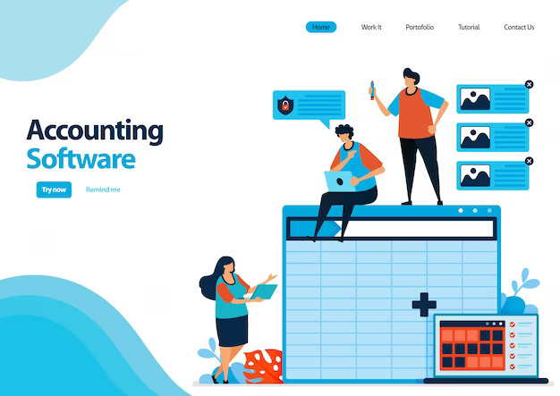

WELL,THE SOLUTION IS
PRACTICAL ACCOUNTING
1.Freelance Accounting Projects
A candidate takes on freelance accounting projects, such as helping a small business with bookkeeping or financial planning. They work on tasks like setting up accounting systems, preparing tax documents, and analyzing financial data. These projects allow the candidate to apply their accounting knowledge in a real-world context and build a portfolio of work that they can present to potential employers.
2.Internship Projects
A candidate has completed their accounting degree but lacks practical experience. They secure an internship at a local accounting firm. During the internship, they are involved in tasks such as preparing monthly financial reports, reconciling accounts, and using accounting software like QuickBooks. This hands-on experience provides them with real-world skills and examples they can discuss during future interviews.
3.Volunteer Work
A recent graduate volunteers to manage the finances for a non-profit organization. They handle tasks such as budgeting for events, processing donations, and preparing financial summaries for board meetings. This volunteer work provides practical experience in accounting and demonstrates their commitment and initiative. They can use this experience to showcase their skills in managing financial operations and working with financial reports during interviews.
4.Simulated Accounting Projects
A candidate participates in a simulated accounting project provided by an online platform or through a university program. This simulation might involve creating financial statements for a mock company, analyzing financial performance, or solving accounting problems. The simulated experience helps the candidate practice practical skills and gain confidence in their abilities.
5.Certifications and Online Courses
A candidate enrolls in an online course or certification program focused on advanced accounting software or specific accounting practices. For instance, they might complete a certification in QuickBooks or Advanced Excel for Accountants. These certifications not only enhance their practical skills but also add credentials to their resume, demonstrating their commitment to professional development.
+91 9136891666
rajaramzparab@gmail.com
203 Ananddeep Building, Station Road,
Dombivli East, Thane - 421201
(Near Madhuban Talkies)